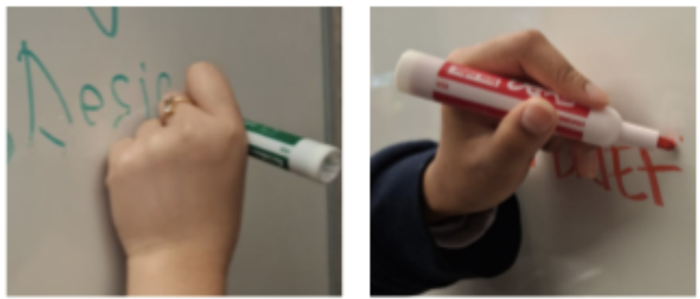
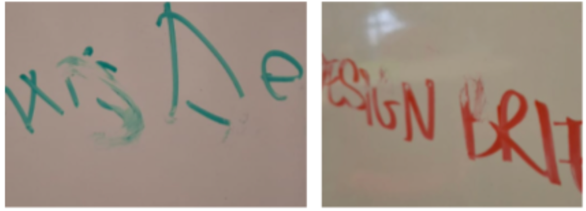
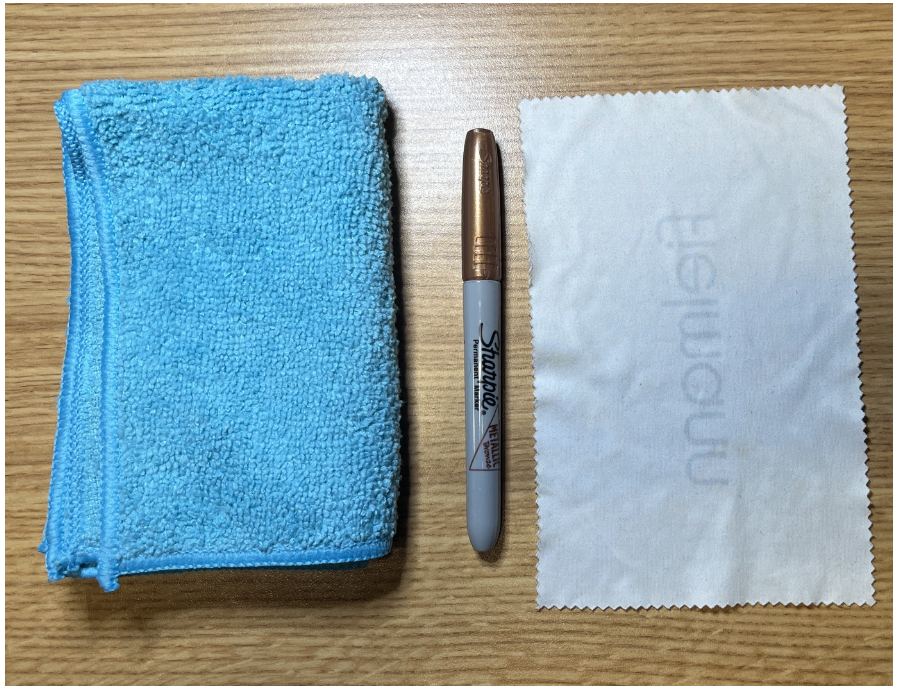
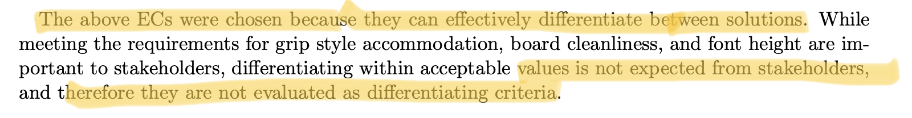
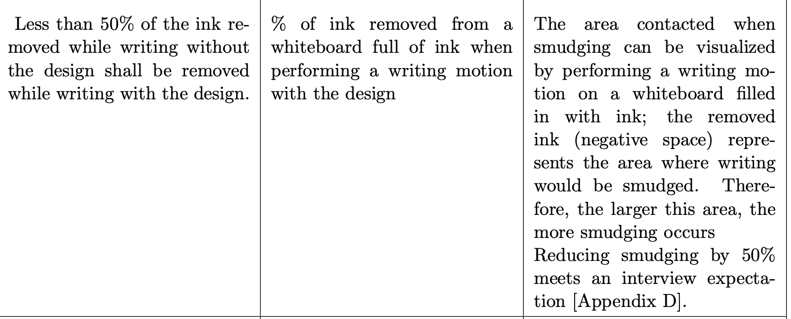
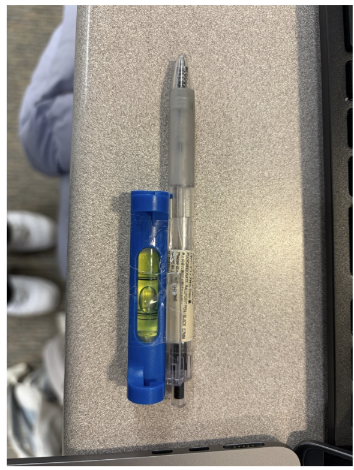
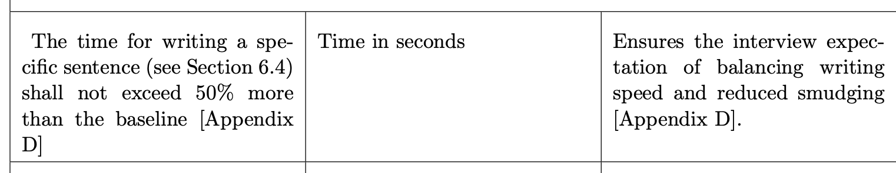
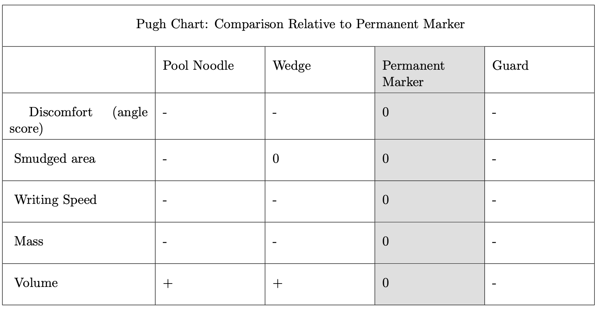
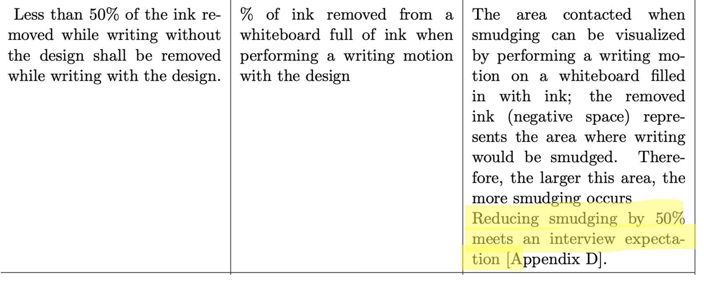
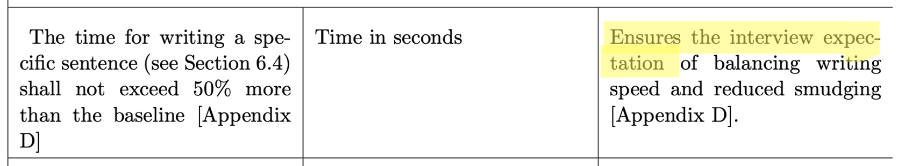

Design Project 01 · Fall 2025
Praxis I: Left-Handed Whiteboard Use in the EngSci Common Room
With Authur Chen, Miles Ehrlich, and Masa Chau
Praxis I was the first time I applied design methodology to a real problem. My position going into this project was straightforward: engineering means understanding who you are building for, not just proving what you can build. This project was where that belief was first tested in practice.
One-Page Summary
In the EngSci Common Room, left-handed students smudge their own writing on whiteboards because their hand naturally trails over freshly written text. This causes messy hands and ergonomic strain from awkward wrist positions.

Fig. 1. Left-handed writing (left) naturally drags the hand over freshly written text. Right-handed writing (right) does not have this issue.

Fig. 2. Smudging evidence. Green and red marker ink was smeared by hand contact during normal left-handed writing.
How we framed the problem: We derived our Needs, Goals, and Objectives (NGOs) from stakeholder analysis and interviews. Three goals guided the design:
- Design shall reduce smudging and ensure cleanliness.
- Design shall accommodate the writing of current EngSci students.
- Design shall be designed for ergonomics.
Prototypes and converging: After generating and evaluating multiple concepts, we converged on the Erasable Permanent Marker as the recommended design. It pairs a permanent marker with a microfiber cloth soaked in diluted isopropyl alcohol for erasing. Permanent marker ink does not smudge by hand contact, and the alcohol solution allows clean erasing.

Fig. 3. Recommended design components: microfiber cloth (left), Sharpie permanent marker (centre), and isopropyl alcohol cleaning cloth (right).
Annotation
Positive
We highlighted the lived experience of the stakeholder by using interviews to justify key requirements and evaluation criteria selection. This grounded the design in real constraints rather than assumptions.
We also fully prototyped candidate concepts and used the results to redirect the design. The prototype failure directly informed our final solution.
Team Values
Team values were not incorporated into the requirements fully. While we used team values to decide critical evaluation criteria, the discussion was not comprehensive enough, making the evaluation criteria selection especially speculative for an outside reader.

Fig. 4. Highlighted sentences in the design report are speculative claims with no cited evidence. This is a direct consequence of not incorporating team values clearly into the requirements.
Absence of Pairwise Comparison
We did not use pairwise comparison to decide the key evaluation criteria. This led to speculative claims in the report with no supporting evidence. Without a structured weighting process, the relative importance of each criterion was left implicit and team-dependent.

Fig. 5. Highlighted sentences are especially speculative because no cited evidence supports the claim. Skipping pairwise comparison left these criteria without defensible justification.
CTMFs Used
Evidence of Use
One early concept used a spirit level taped to a pen to show the writer an ideal writing angle. Building and testing this prototype revealed that a level cannot detect the horizontal angle between the hand and the board. This angle turned out to be the critical factor driving smudging.

Fig. 6. Prototype: spirit level taped to a pen. Physical testing revealed it cannot detect horizontal wrist angle, which is the actual driver of smudging. This finding redirected the design entirely.
Informed by this failed design, more secondary research on writing angle was carried out. Findings showed that writing angle affects user comfort. This led directly to including a writing angle requirement in the ergonomics goal.

Fig. 7. Writing angle requirement ensuring the user's wrist stays in a comfortable range. Unlike the earlier requirements, the justification here cites both secondary research and stakeholder interview data.
Assessment
Prototyping showed that engineering design is inherently iterative. A concept that seemed reasonable on paper failed a simple physical test, which redirected our effort toward the right variable.
Prototype early with the cheapest possible artifact. This helps expose hidden assumptions before committing to development.
Evidence of Use
We used a Pugh chart with the permanent marker as the base condition to compare all candidate concepts. The permanent marker outperformed every alternative across the selected evaluation criteria.

Fig. 8. Pugh Chart with permanent marker as base condition. Pool Noodle, Wedge, and Guard all score lower across discomfort, smudge area, writing speed, mass, and volume.
Assessment
The Pugh chart made the convergence decision transparent and defensible. However, its validity depends entirely on the quality of the evaluation criteria. Because pairwise comparison was not used to weight them, the chart reflects intuition as much as rigorous analysis.
For future use, always pair a Pugh Chart with a pairwise comparison beforehand.
Evidence
The reframing process relied entirely on stakeholder interviews and small experiments. No secondary research was carried out to steelman the framing claim. Requirements 1.1 and 2.1 are justified only by interview data and logical interpretation, as shown in the justification columns below.

Fig. 9. Requirement 1.1: smudging reduction. The justification traces only to an interview expectation, not secondary research.

Fig. 10. Requirement 2.1: writing speed. The justification cites an interview expectation without independent verification.
Assessment
A steelman argument requires finding the strongest possible counterevidence against your framing before committing to it. Relying only on stakeholder interviews makes the framing claim speculative — the interview confirms the problem exists, but does not rule out alternative framings or causes.
Always carry out secondary research to steelman any framing claim before deriving requirements from it.
Evidence
Pairwise comparison was not used to prioritize the evaluation criteria before applying the Pugh chart. This left the relative weighting of criteria implicit and team-dependent rather than explicit and evidence-based.
Assessment
The omission led to speculative claims in our report (see annotation above). Pairwise comparison forces a team to resolve disagreements about priorities before evaluation begins.
Skipping this step introduces systematic bias that propagates through all downstream decisions.